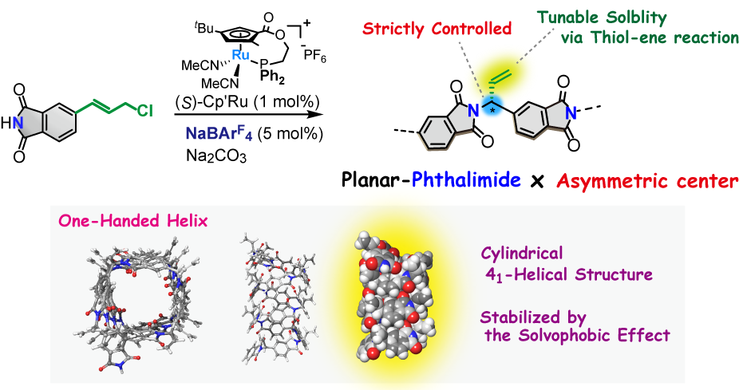
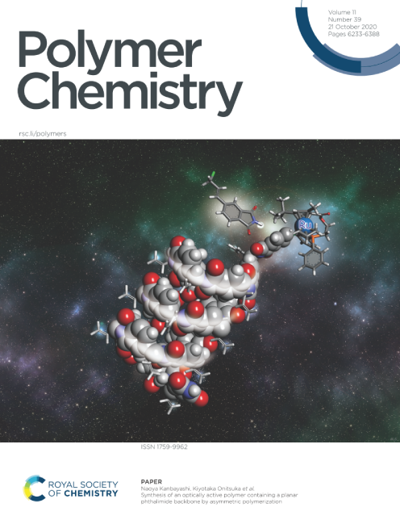

当研究室では、面不斉ルテニウム錯体を触媒とする不斉アリル位置換反応を不斉重合反応に展開し、主鎖の不斉点を厳密に制御した光学活性高分子の合成に成功している。本研究では、剛直なフタルイミド骨格を有するモノマーを設計し、これを用いた不斉重合反応により、不斉点および剛直なユニットによって主鎖構造が制御された新規光学活性高分子の合成に取り組んだ。求核剤であるフタルイミドと塩化アリルを連結したモノマーを合成し、反応を行ったところ、重合は定量的に進行し、主鎖不斉炭素が厳密に制御された光学活性高分子を与えた。各種分析の結果、得られた高分子は溶液中でらせん構造を形成していることがわかった。また、側鎖のオレフィン部位に着目し、チオール－エン反応による側鎖修飾を試みたところ、種々の置換基を導入することができた。得られた高分子は導入した側鎖置換基によって溶解度が変化し、さらに円二色性スペクトルにおいても有意な差がみられたことから、側鎖や溶媒によって高分子のコンフォメーションが変わることが示唆された。